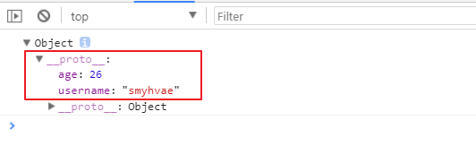

JSON对象
- js对象(数组) –> json对象(数组)：
1 | JSON.stringify(obj/arr) |
- json对象(数组) –> js对象(数组)：
1 | JSON.parse(json) |
上面这两个方法是ES5中提供的。
我们要记住，我们通常说的“json字符串”，只有两种：json对象、json数组
typeof json字符串的返回结果是string。
Object的扩展
ES5给Object扩展了一些静态方法，常用的有2个，我们接下来讲解。
方法一
1 | Object.create(prototype,[descriptors]) |
作用：以指定对象为原型，创建新的对象。同时，第二个参数可以为新的对象添加新的属性，并对此属性进行描述。
举例1：（没有第二个参数时）
1 | var obj1={username:'smyhvae',age:26}; |
打印结果：

我们发现，obj1成为obj2的原型。
举例2：（有第二个参数时）
第二个参数可以给新的对象添加新的属性。我们修改上面的代码，尝试给obj2添加新的属性‘sex’：
1 | var obj1 = {username: 'smyhvae', age: 26}; |
上方代码中，我们通常第5行的sex给obj2设置了一个新的属性‘sex’，但是要通过‘value’来设置属性值（第6行）。
设置完属性值后，这个属性值默认是不可修改的，要通过‘writable’来设置。总而言之，这几个关键字的解释如下：
value：设置属性值。writable：标识当前属性值是否可修改。如果不写的话，默认为false，不可修改。configurable：标识当前属性是否可以被删除。默认为false，不可删除。enumerable：标识当前属性是否能用 for in 枚举。 默认为false，不可。
单独设置属性
1 | Object defineProperty(obj2,'sex',{ |
方法二
这个方法有点难理解。
1 | Object.defineProperties(object,descriptors) |
作用：为指定对象定义扩展多个属性。
代码举例：
1 | var obj2={ |
- get ：用来获取当前属性值的回调函数
- set ：修改当前属性值得触发的回调函数，并且实参即为修改后的值
存取器属性：setter，getter一个用来存值，一个用来取值。
Object的扩展（二）
obj对象本身就自带了两个方法。格式如下：
1 | get 属性名(){} 用来得到当前属性值的回调函数 |
举例如下：
1 | var obj={ |
数组的扩展
下面讲的这几个方法，都是给数组的实例用的。
方法1：
1 | Array.prototype.indexof(value) |
作用：获取value在数组中的第一个下标。
方法2：
1 | Array.prototype.lastIndexOf(value) |
作用：获取 value 在数组中的最后一个下标。
方法3：
1 | Array.prototype.forEach(function(item, index){}) |
方法4：
1 | Array.prototype.map(function(item, index){}) |
作用：遍历数组返回一个新的数组，返回的是加工之后的新数组。
方法5：
1 | Array.prototype.filter(function(item, index){}) |
作用：遍历过滤出一个新的子数组，返回条件为true的值。
函数function的扩展：bind()
ES5中新增了bind()函数来改变this的指向。
1 | Function.prototype.bind(obj) |
作用：将函数内的this绑定为obj，并将函数返回。
面试题：call()、apply()和bind()的区别：
- 都能改变this的指向
- call()/apply()是立即调用函数
- bind()：绑定完this后，不会立即调用当前函数，而是将函数返回，因此后面还需要再加
()才能调用。
PS：bind()传参的方式和call()一样。
分析
为什么ES5中要加入bind()方法来改变this的指向呢？因为bind()不会立即调用当前函数。
bind()通常使用在回调函数中，因为回调函数并不会立即调用。如果你希望在回调函数中改变this，不妨使用bind()。